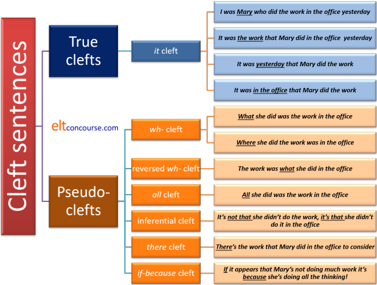

Cleft sentences
A cleft sentence is a complex sentence ... that has a meaning
that could be expressed by a simple sentence.
wikipedia.org (n.d)
If that is true, you may be forgiven for asking why the idea is not expressed in a simpler way.
 |
Task 1: What do
you understand to be the difference
between: |
They key is
emphasis. The second example is marked to show
that the speaker / writer wishes the hearer / reader to understand that
the emphasis lies on the music.
Another way of putting this is to say that the first sentence is neutral
and the second is marked.
Markedness is the central reason for the production of
cleft sentences.
For more on why moving the important (marked) element happens, see the guide to postponement and extrapositioning,
linked below in the list of related guides.
 |
What do cleft sentences do? |
Clefts function to give prominence to a particular part of a clause. They do this by dividing the clause into two parts (hence the name) and assigning a verb to each noun phrase. This is a way, in English, of marking, i.e., distinguishing, a proposition. For more on markedness in English, see the guide linked in the list of related guides at the end.
We can, for example, take the simple sentence:
Mary took her mother to a restaurant last night
and emphasise whichever part of the sentence we feel is
important by making cleft sentences, like this:
- emphasising the subject
- It was Mary who took her mother to a restaurant last night
- emphasising the direct object
- It was her mother that Mary took to a restaurant last night
- emphasising the adverbial of time
- It was last night that Mary took her mother to a restaurant
- emphasising the adverbial of place
- It was to a restaurant that Mary took her mother last night
All four sentences above are examples of what is called, for a fairly obvious reason, an it-cleft. They all begin with a dummy, anticipatory or empty it pronoun and use the verb be to make the clause. In this way, two clauses have been produced from the single-clause sentence with which we started.
 |
The procedure |
The procedure for making a cleft sentence is closely parallel to the procedure for making a relative clause (which is one reason why teaching it to learners who cannot yet handle relative pronoun clauses is probably a forlorn effort). It works like this:
- To mark the subject
- Begin with a standard, unmarked, active-voice clause
such as:
Eunice wrote a letter to her husband last week - Insert the it + the verb be in the
correct tense at the beginning to get:
It was Eunice wrote a letter to her husband last week - Insert the correct relative pronoun with the subject as
the antecedent between the it-clause and the
subject of the original clause to get:
It was Eunice who/that wrote a letter to her husband last week
- Begin with a standard, unmarked, active-voice clause
such as:
- To mark the object
- Begin with a standard, unmarked, active-voice clause
such as:
Eunice wrote a letter to her husband last week - Insert the it + the verb be in the
correct tense at the beginning to get:
It was Eunice wrote a letter to her husband last week - Insert the object phrase after the it-clause to
get:
It was a letter Eunice wrote a letter to her husband last week - Optionally, because we are not referring to the subect,
insert that as the appropriate relative pronoun and
get:
It was a letter (that) Eunice wrote a letter to her husband last week
- Begin with a standard, unmarked, active-voice clause
such as:
- To mark an adverbial phrase
- Begin with a standard, unmarked, active-voice clause
such as:
Eunice wrote a letter to her husband last week - Insert the it + the verb be in the
correct tense at the beginning to get:
It was Eunice wrote a letter to her husband last week - Insert the adverbial phrase to be marked for focus after
the it-clause to get:
It was last week / to her husband Eunice wrote a letter - Optionally, because we are not referring to the subject,
insert insert that as the appropriate relative
pronoun and get:
It was last week / to her husband (that) Eunice wrote a letter
- Begin with a standard, unmarked, active-voice clause
such as:
The general rule for the patterns may be set out as:
it-clause + marked element (+ relative pronoun) + remainder of the sentence
If the subject or the object of the sentence is emphasised we can use
who or whom as the relative pronoun although that will often
be used as the pro-form for all noun phrases. We can, therefore
have:
It was her mother who(m) Mary took to a
restaurant last night
or
It was her mother that Mary took to a
restaurant last night
and
It was Mary who took her mother to a
restaurant last night
and
It was Mary that took her mother to a
restaurant last night
When the fronted item contains the object of the verb, in formal
English, whom not who must be used.
Informally, the distinction is disappearing.
If the marked item is not the subject of the sentence, the relative pronoun is often omitted. Informally, even when the marked element is the subject, the relative pronoun can be omitted but this is considered stylistically inappropriate in written language or more formal speech.
If you try saying those sentences aloud, you will notice that the
stress falls on the emphasised item quite naturally: Mary,
mother, last night, to a restaurant, respectively.
Part of the usefulness of cleft sentences is that they allow us to
emphasise a particular element in the sentences in writing as well as in
speech.
The hearer or reader is instantly aware that the writer or speaker has
marked part of the sentence for the effect that needed to be
communicated.
 |
Focus |
Allied to the concept of markedness is the ability that cleft
sentences have to focus on an element in the sentence.
In this sense cleft sentences bear an obvious relationship to defining or
restrictive relative clauses.
In the sentences above concerning the woman and her mother, focus is
irrelevant because (normally) people only have one mother.
However, if we amend the example slightly to allow more than one
possible interpretation we can see how focus works so, for example:
It was her sister that she took to the
restaurant
focuses clearly on emphasising the sister (i.e., the object of
the main verb, took).
We can also have, however:
It was her sister that she took to the
restaurant who complained
and in this case, the clause that she took to the
restaurant defines the sister, just as a restrictive relative
clause should do. The implication is that the woman in
question has at least one other sister who did not complain.
Cleft sentences are, in fact, more flexible than relative clauses
in what they can identify as the focus and define. We do not
allow, for example, either:
*Because she was unhappy with the price that she
complained
*In the morning that she arrived
because relative pronoun clauses cannot function to define
adverbials in this way.
Clefts can, however, pull off the trick so we allow both:
It was because she was unhappy with the price
that she complained (and not for any other reason)
and
It was in the morning that she arrived (and not at
any other time).
 |
Emphasising adverbials |
| It was alone that she walked |
In the example above, the adverbial of time is emphasised but other adverbial expressions are also possible in this structure so we can have, for example:
- emphasising the causal adverbial subordinate clause
- It was because I needed the money that I went to the bank
- emphasising the locational adjunct adverbial
- It was on the other side of the river that the house stood
- emphasising an adverbial of manner
- It was in confidence that she told you that
- emphasising a viewpoint adjunct adverbial
- It was only economically that this was an important issue
- emphasising a process adjunct
- It was on horseback that he came
- emphasising a limiter adjunct
- It was primarily that I wanted an answer
However, some adverbial adjuncts resist inclusion in cleft structures so we do not usually find:
- emphasised intensifiers
- *It was really that I didn't like the food
- emphasised focusing adverbial adjuncts
- *It was chiefly that she came to say hello
- emphasised sequencers
- *It was secondly that I wanted to the question
- emphasised subject adverbials
- *It was stupidly I forgot my keys
Disjunct adverbials (either of style or attitude) and conjuncts
also resist inclusion in any cleft structures so we do not find:
*It is frankly that I'm not sure
*It is arguably that that is the wrong answer
*It is alternatively that I will do it myself
*It is moreover that it is too costly
*It is likewise that I enjoyed the play
*It is otherwise that we must go to London ourselves
 |
Other restrictions |
In addition to the restrictions concerning the types of adverbials that can be the marked item, cleft sentences proper, like these, have important restrictions:
-
They do not allow us to emphasise the verb
so we cannot have:
*It was took that Mary her mother to a restaurant did last night
To emphasise the verb, we have to resort to a pseudo-cleft with a wh-word and make, for example:
What Mary did was take her mother to a restaurant last night.
(An alternative is to replace the verb with a non-finite form, either the infinitive or the gerund, so we may have:
It's eating in restaurants that Mary enjoys
It's to go to a restaurant that Mary most wants to do
It's eat out that Mary enjoys most
but such formulations are quite rare and probably left until learners are able to cope happily with more conventional cleft sentences.) -
They do not (usually) allow us to
emphasise the complement of a copular verb so we don't normally find
sentences such as:
*It was an idiot that he appeared
*It's Prime Minister that she became
*It's foolish that he was
Again, to emphasise the complement of the copular verb or the attribute it links to the subject, we have to resort to a pseudo-cleft with a wh-word and make, for example, the questionable and somewhat clumsy:
What he appeared was an idiot
What she became was Prime Minister
What he was was foolish
What she became was furious
How he appeared was exhausted
How it sounded was indescribably bad -
When we want to mark the indirect object, we usually resort to the
dative shift and use the to-formulation to show the dative.
So, for example, we can convert:
Mary told her mother the lie
into:
It was the lie Mary told her mother
which marks the direct object (the lie) and we can also produce:
I was to her mother that Mary told the lie
which marks the indirect object (her mother) but
?It was her mother Mary told the lie
is very marginally acceptable, if it is acceptable at all.
See also below. -
A fourth restriction applies only to time adverbs of
indefinite (not definite) frequency. We can make these the focus of a cleft sentence
as in, for example:
It's not often he gets angry with the children
It's really quite seldom the children behave well
but if the adverb is neither modified nor negated, we do not allow it to be the focus of a cleft sentence so, e.g.:
*It's often he gets angry with the children
*It's seldom the children behave well
are not allowed.
Adverbs of definite frequency may be the focus of a cleft but the result is clumsy or marginally acceptable:
?It's hourly the train leaves for London
 |
Cleft negatives and interrogatives |
In the foregoing and what follows, we will be focused on declarative cleft sentence forms for simplicity's sake but it should not be forgotten that we can also form:
- negative sentences
- It wasn't Mary who / that took her mother to a restaurant last
night
It wasn't her mother who / whom / that Mary took to a restaurant last night
It wasn't last night that Mary took her mother to a restaurant
It wasn't to a restaurant that Mary took her mother last night - interrogative sentences
- Was it Mary who took her mother to a restaurant last
night?
Was it her mother that Mary took to a restaurant last night?
Was it last night that Mary took her mother to a restaurant?
Was it to a restaurant that Mary took her mother last night?
The formation of cleft questions allows the speaker / writer of the language to avoid the ambiguity of some yes-no questions, incidentally, as is explained below.
Cleft sentences can also, more rarely , occur in exclamations
such as:
Was it only for this that we worked so hard?!
What a beautiful piece of music it was that she chose for her
wedding!
 |
Four alternatives in cleft sentences |
- It is possible to use modal auxiliary verbs in cleft
sentences so we can have, for example:
It might have been Mary who took her mother to a restaurant last night
It must have been her mother that Mary took to a restaurant last night
It can't have been last night that Mary took her mother to a restaurant
It could have been to a restaurant that Mary took her mother last night - Cleft sentences may be used to emphasise the indirect
object of the clause as in, for example:
It was John Mary gave the book
but in these cases, it is more common to prefer:
It was John Mary gave the book to
or
It was to John Mary gave the book
with John functioning as the complement of the preposition, to, rather than standing alone as the indirect object. This is an example of when the dative shift is the more natural form to select. - It is possible to leave out the relative pronouns in the
same way that they can be omitted from restricted or
defining relative clauses. For example:
It was her mother Mary took to a restaurant last night
It was last night Mary took her mother to a restaurant
It was to a restaurant Mary took her mother last night
but, as with relative clauses, we cannot except very informally omit the subject pronoun:
?*It was Mary took her mother to a restaurant last night. - Although the dummy pronoun, it, is the most
frequent way to introduce cleft sentences, there are
alternatives using the demonstrative pronouns that
and those (but not this and these)
as in, for example:
Those were my letters that the postman delivered
That was her mother that she took to a restaurant
There are a number of ways to make cleft sentences, pseudo- or otherwise, in order to focus on a particular item. Seven, in fact, and we'll exemplify them all.
 |
4 main types of cleftsThere are four sorts to consider first. |
- it-cleft
- In most analyses, these sorts of sentences are the only true cleft
sentences and the others which follow are better described as pseudo-cleft
sentences. That is probably a distinction which does not need to be
the subject of a great deal of teaching time.
It is possible, as we saw above, to emphasise various parts of
sentences with it-clefts.
These are exemplified above and work like this:- Marking the noun phrase
She enjoyed the hotel most ⇒ It was the hotel she enjoyed most
It is also possible, but slightly rarer, to use that or those instead of it as in, e.g.:
She enjoyed that hotel most ⇒ That was the hotel she enjoyed most
She enjoyed those places most ⇒ Those were the places she enjoyed most - A form of
it-cleft sentences is one which contains a subordinate clause rather than a subject
noun which the speaker / writer wants to mark. It appears, for example in:
I went to the bank because he wanted his money ⇒ It was because he wanted his money that I went to the bank
Here the reference is not to a subject or object noun but to the adjunct, subordinate clause because he wanted his money which is nominalised to form the antecedent of the pronoun that. - Other adjunct adverbials, whether adverbs or prepositional
phrases, can be similarly marked as in, for example:
I worked on it at the weekend ⇒ It was at the weekend that I worked on it
I sat outside ⇒ It was outside that I sat
She responded enthusiastically ⇒ It was enthusiastically that she responded
She left at 9 ⇒ It was at 9 that she left
There are those who would argue, with some reason, that forming cleft sentences to emphasise an adverb of manner, indefinite frequency or degree is rare or even wrong so sentences such as:
?It was hard that he was thinking
?It was frequently that she argued
?It was enormously that he enjoyed the party
are all, at the very best, questionable. Many would reject them out of hand.
They are certainly worth avoiding for teaching purposes.
Even adverbs of time are sometimes questionably used in cleft sentences so while most would accept
It was early in the morning when he arrived
which uses an adverbial prepositional phrase, the use of a simple adverb is less acceptable so, many would reject:
?It was early that he arrived
We saw above that it-clefts can be formed in both negative and interrogative sentences.
- Marking the noun phrase
- wh-cleft
- These are usually referred to as pseudo-cleft sentences.
The rule for forming them is parallel to the rule for forming
it-clefts set out at the beginning.
- They allow the emphasis to fall on the verb phrase and it-clefts,
as we saw, do not permit that usually.
She enjoyed the hotel most ⇒ What she enjoyed most was the hotel - When a wh-cleft is used to emphasise the verb, the
tense structure remains unaltered across the sentence so we can also
have, for example:
She has ruined the party ⇒ What she has done is ruined the party
or
She is ruining the party ⇒ What she is doing is ruining the party - We can use other wh-words (who(m), where, when,
why, how)
to make these so it is possible to have, e.g.,
She liked the clowns most ⇒ Who(m) she liked most were the clowns
She most enjoyed going to the beach ⇒ Where she enjoyed going most was to the beach
She enjoyed taking a holiday in winter most ⇒ When she enjoyed taking a holiday most was in winter
She took a holiday to get away from work ⇒ Why she took a holiday was to get away from work
She paid for her holiday with a credit card ⇒ How she paid for her holiday was with a credit card
although it is certainly arguable that the use of why and how produces clumsy expression.
Some aver that adverbials of time as the marked elements of wh-clefts result in some clumsiness so
England won the world cup in 1966 ⇒ When England won the world cup was in 1966
may be seen as only marginally acceptable. This is not a hard rule, however. - We cannot use whose
in this kind of cleft so, for example
*Whose credit card was stolen was Mary's
is not acceptable.
To use whose, we need to resort to an it-cleft and even then the outcome is often rather clumsy but we can have, for example:
It was Mary whose credit card was stolen - It is possible to form both negative and interrogative wh-clefts
such as:
What Mary enjoyed most wasn't the hotel
Whom Mary liked most weren't the clowns
Was the hotel what Mary enjoyed most?
Were the clowns who(m) she liked most?
and so on.
- They allow the emphasis to fall on the verb phrase and it-clefts,
as we saw, do not permit that usually.
- Reversed wh-cleft
- The clue is in the name. To make a sentence like this we
reverse the position of the wh-word and the object of the
verb.
She enjoyed the hotel most ⇒ The hotel was what she enjoyed most
As we saw above, we can use other wh-words (who(m), where, when, why, how) to make these sorts of clefts:
She liked the clowns most ⇒ The clowns were who(m) she liked most
She enjoyed going to the beach ⇒ The beach is where she enjoyed going most
She enjoyed taking a holiday in winter most ⇒ In winter was when she enjoyed taking a holiday most
She took a holiday to get away from work ⇒ To get away from work was why she took a holiday
She paid for her holiday with a credit card ⇒ With a credit card was how she paid for her holiday
although, again, it is certainly arguable that the use of why, and how produces clumsy expression.
The use of whose in such pseudo-cleft sentences is not available and an it-cleft is the only alternative as is the case, explained above for non-reversed wh-clefts.
It is again possible to form both negative and interrogative reversed wh-clefts such as:
The hotel wasn't what Mary enjoyed most
The clowns weren't whom Mary liked most
Was what Mary enjoyed most the hotel?
Were whom she liked most the clowns?
but, as we see with the last example, the outcome is often rather clumsy. - all-cleft
- These are quite simple and exclude all other possibilities
connected to the verb. All-clefts emphasise the
object of the verb, whether that is a noun phrase or a nominalised
clause.
She enjoyed the hotel ⇒ All she enjoyed was the hotel
and this implies that she enjoyed nothing except the hotel.
She said she wanted to go ⇒ All she said was that she wanted to go
and this implies that she said nothing else.
It is possible to form interrogative all-clefts such as:
Was all she enjoyed the hotel?
Was all she said that she wanted to go?
but negatives sentences are very rare:
?*All she enjoyed wasn't the hotel
?*All she enjoyed wasn't the clowns
even when they are theoretically allowed.
 |
Task 2: Look carefully at the examples above and see if you can make the four
main types of cleft sentences from this example: |
- it-cleft
- I'm trying to help the poor man ⇒ It's the poor man I'm trying to help
- wh-cleft
- I'm trying to help the poor man ⇒ Who(m) I'm trying to help is the poor man
- Reversed wh-cleft
- I'm trying to help the poor man ⇒ The poor man is who(m) I'm trying to help
- all-cleft
- I'm trying to help the poor man ⇒ All I'm trying do is help is the poor man
In any of these four types of cleft sentences, the fronted item is,
naturally, the subject of the verb. This means that the clauses
may be referred to as apposed subject clauses because
the fronted item (it, wh-word or all) is the same as
the item to which it refers. Thus, for example, in:
It was difficult to think of a better idea
the words it and to think of a better idea refer to
the same things. They are, therefore, in apposition.
 |
3 other types of clefts |
That was quite easy to do but there are some other sorts of clefts that are harder to form but which are nevertheless quite common. Here they are:
- Inferential cleft
- I'm trying to help the poor man ⇒ It's not that I'm
not trying to help the poor man. It just looks
that way.
And we have:
Well it's not because
I'm an early riser
I didn't go to sleep last night
(Bob Dylan, Walkin' Down the Line, 1963)
Function: An inferential cleft serves to discount what others may be wrongly assuming. - there-cleft
- I'm trying to help the poor man ⇒
There's this poor man I'm trying to help
Function: A there-cleft marks the existence of something for emphasis and often performs a similar function to an it-cleft. - if-because cleft
- I'm trying to help the poor man ⇒
If it looks like I'm interfering, it's because I'm trying to help the poor man
Despite if-because clefts containing the conjunction if which is normally associated with conditional forms, this is not a conditional form. It can be replaced with the subordinator although as in, e.g.:
Although it looks like I'm interfering, it's because I'm trying to help the poor man
showing that it is concessive not conditional.
Function: These clefts serve a similar purpose to inferential clefts, making it clear that an assumption that might be being made is not valid.
Although it is in principle possible to make both negative and interrogative constructions from there- and if-because clefts, the outcomes are almost always very questionable when they are acceptable at all. Inferential clefts are the exception insofar as they are normally negative for semantic reasons as we saw above.
 |
Task 3: Before we go on, click here for a short test to make sure you can identify all seven types. |
 |
Summary |
Here's a summary of the story so far (slightly incomplete).
You may need to keep it in mind in what follows and for planning
purposes.

 |
Stress and meaning |
|
|
Task 4: Now try making all seven types of cleft sentences with this example:
|
How?
One suggested way of stressing the sentences is in bold. Arrows show rising or falling intonation. If you have it in a different place, you are implying something different. That is, of course, perfectly legitimate.
- it-cleft
- We expected a refund ⇒ It was a refund↑ we expected
- wh-cleft
- We expected a refund ⇒ What we expected was a refund↑
- Reversed wh-cleft
- We expected a refund ⇒ A refund↑ was what we expected
- all-cleft
- We expected a refund ⇒ All we expected was a refund↑
- Inferential cleft
- We expected a refund ⇒ It's not that we didn't expect a refund↓. It's that we should have been offered↑ one
- there-cleft
- We expected a refund ⇒ There was a refund↓ that we were expecting
- if-because cleft
- We expected a refund ⇒ If it looks like we're expecting a refund↓, it's because we are↑ expecting a refund.
Why?
The obvious answer is that the speaker has chosen to emphasise certain aspects of the information. We could, for example, stress the verbs or any other element in all the examples and arrive at a different emphasis. For example:
- it-cleft
- We expected a refund
⇒
It was a refund we expected↑
Stressing the verb - wh-cleft
- We expected a refund ⇒
What we↑ expected was a refund
Stressing the subject - Reversed wh-cleft
- We expected a refund ⇒
A refund↑ was what we expected
Stressing the object. - all-cleft
- We expected a refund ⇒
All we expected↑ was a refund
Stressing the verb. - Inferential cleft
- We expected a refund ⇒
It's not that we↑ didn't expect a refund.
It's that they↑ should have offered
us one
Stressing the subjects of both clauses. - there-cleft
- We expected a refund ⇒
There was a refund↓ that we were
expecting
Stressing the direct object. - if-because cleft
- We expected a refund ⇒
If it looks like we're expecting↓ a refund,
it's because we are↑ expecting a refund.
Stressing the verb.
In written language, prosodic features of intonation and sentence stress are unavailable so the reader will assume that the writer is emphasising the obvious in all cases. Usually that will be the subject or object of the clause.
Disambiguation |
An important motivation for the use of a cleft sentence form, especially in questions, is the opportunity to make clear what might otherwise be an ambiguous interrogative.
Nearly all yes-no questions are, by their nature
ambiguous in terms of what they are asking. Really simple
questions such as:
Is John here?
are not ambiguous because the direction of the question can only be
John's presence or absence. There is no motivation, unless the
speaker / writer wants to mark particular emphasis to form the
question as a cleft and have:
Is it John who is here?
and that form is, accordingly, quite rare.
However, a question such as:
Did you drive the car to Scotland last week?
could be directed as:
Was it you who drove the car to Scotland last
week?
Was it last week you drove the car to Scotland?
Was it the car you drove to Scotland last week?
What did you do with the car last week?
and only the co-text and context can disambiguate this in writing
although sentence stress can make the sense clear in spoken
language. In writing and frequently in speech, therefore,
users of the language will often form a cleft sentence to make the
thrust of the question clear.
As we saw above, however, the verb
cannot be the focus of a cleft sentence form so the last question is
still open to some alternative interpretations which may have
nothing to do with driving or Scotland.
 |
Other languages |
Cleft sentences (or the meanings they encode) are
handled very differently indeed in other languages so you need to have
some idea of what your learners' first language(s) do before setting out
to teach the forms.
In particular:
- The analysis above of cleft sentences is, obviously, confined to English and it is difficult to do an analysis like this without reference to the elements of English grammar involved (above, we have considered the odd role of the pronoun it in English as a prepositioned element often empty of meaning, the use of wh-words as relative pronouns (contrasted with that) and quantifiers such as all along with the role of the conjunction if.
- Chinese languages put shi before the item to be stressed and add a possessive de after it.
- French uses the C'est structure to produce It-clefts.
- Germanic languages, on the other hand, have similar ways to handle clefts to English structures.
- Not all these elements have parallels in all languages, of course, so any cross linguistic comparison of structures is fraught with difficulty. Some languages, such as Dutch, Albanian, Scandinavian languages (including Finnish and Icelandic), German, Spanish, French, Italian, Malay / Indonesian, Latvian, Maltese, Portuguese, Greek, Russian, Polish (and other Slavic languages including Slovak, Czech and Slovene etc.), Persian languages (Farsi, Dari, Tajik) and Thai do not distinguish between a pronoun referring to people and one referring to inanimate objects and animals. The use of who vs. which in cleft sentences poses a problem for speakers of these languages. They are probably safer sticking to that.
- Turkish, Korean, Thai, Japanese and some other languages have no structure that can sensibly be called a relative pronoun clause so cleft sentences in which there is often a nominalised relative clause cause problems both in comprehension and production.
In all cases, however, the basic communicative thrust of any parallel structures remains the same: markedness.
 |
What to consider when teaching cleft structures |
Comprehension comes first. Cleft sentences are, despite
their structural complexity, very common in speech and writing.
The first stage of any teaching is often, therefore, to expose
learners to authentic examples of clefts in action and focus them on
unpacking meaning and understanding the intentions of the producer
of the forms in terms of emphasis or marking.
Here are some authentic examples:
- All I needed was you (song lyric)
- What I needed was you (song lyric)
- All you need is love (song lyric)
- What I needed was to be alone (website: https://medium.com/@tonislavadocheva)
- What I wanted was to die among strangers, untroubled, beneath a cloudless sky (Yukio Mishima, Confessions of a Mask)
- What I wanted was the most honest part of your soul and what I received was everything I was trying to avoid (RH Sin)
- What I wanted was to understand certain things better by understanding them psychoanalytically (Peter Gay)
- It was a story that Victor Conte told me to use (Kelly White)
- It was to the cockpit on Victory's orlop deck that Nelson was brought after being shot (website: https://www.hms-victory.com)
- Going out altogether for a meal was what he had in mind (website: http://www.ninjajournalist.com/world/man-ordered-a-coffee-yh)
- They are going to say there was a party that promised to deliver Brexit, we put them into Number 10 and they failed. (Jeremy Hunt, British politician, May 28 2019)
It is not difficult to find many more examples via an internet search engine.
One way to alert learners to the meaning of cleft sentences is to
ask them to compare the cleft and non-cleft versions of the same
thought and get them to see what the speaker / writer had in mind
when forming the cleft version. For example, both:
I wanted to tell him the good news
and
It was the good news that I wanted to tell
him
appear to mean the same but the writer / speaker has deliberately
marked the good news as the important direct object.
We could also have:
It was him that I wanted to tell the good news
and the speaker has chosen, in this case, to mark the indirect
object.
It is not too difficult to make up similar pairs or groups of
sentences emphasising (i.e., marking) various aspects of the
sentence.
Like this:
| Which part of the sentence is emphasised? | |
| John sold Mary the car | no special emphasis |
| It was John who sold Mary the car | emphasising __________ |
| It was the car that John sold Mary | emphasising __________ |
| It was Mary that John sold the car to | emphasising __________ |
The next obvious step, focusing both on form and communicative
function is to ask the learners to devise such a table from a
different initial sentence, such as:
Mary took the children to the zoo last
Thursday
which allows for at least 4 cleft sentences to be formed marking
each phrase in the sentence.
A more challenging exercise is to ask learners to speak a normally
ordered sentence emphasising one part of it, such as, e.g.:
John
decided to take Mary to the party
John decided to take
Mary to the party
John decided to take Mary
to the party
and get a partner to form the three possible it-cleft
sentences from that.
The same approach may be taken with wh-pseudo-cleft
sentences starting with, e.g.:
I wanted a new overcoat for my birthday
and getting the learners to come up with a reason why someone might
prefer to say:
What I wanted for my birthday was a new coat
When learners can successfully unpack the meaning of a cleft such
as that one, it is time to get them to do the conversion from, e.g.:
She wore
a new dress to the party
to
What she wore to the party was a new dress
That's not very easy to do and learners need a bit of practice.
There are some other simple issues to consider when teaching in this area:
- Level: these are complex sentences which exhibit unusual word order in some cases and may well confuse learners at lower levels. Handle with care.
- Focus: This guide has described seven forms of cleft and pseudo-cleft sentences which all exhibit different structural characteristics. It would be foolhardy to focus on more than one or two at a time. That way madness lies.
- Structure: the structures are usually
quite similar: What / It / Who etc. + to be + the
noun phrase but it can be another type of phrase in something like
It was over the bridge that he fell
It takes a little practice to get the structure right. - Intonation and sentence stress: are crucial to understanding and producing clefts. Make sure they form part of the core of the teaching.
- Speaker / writer intention is also crucial. We use the structures because we are concerned to make a message very clear in terms of what we, the speakers / writers, consider important. You need to concept check and embed the language in absolutely clear contexts or the learners will just be manipulating the language for no communicative purpose.
| Related guides | |
| the word order map | for links to other guides in this area |
| fronting | for a guide to a closely connected area |
| markedness | for a guide to how item may be distinguished in ways other than cleft sentences |
| circumstances | analysing prepositional and adverbial phrases somewhat differently |
| relative pronoun clauses | for the guide to a related area |
| coordination | which all consider the ordering of clauses |
| subordination | |
| conjunctions | |
| postponement and extrapositioning | which explains how items can be moved to the end of a clause or sentence for effect |
If you would like to look at an exercise for learners on cleft sentences and perhaps use it as part of a lesson in this area you can access it here.